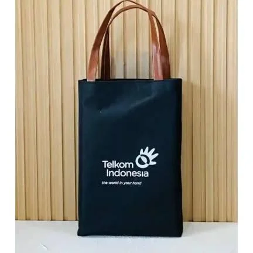

Jawaban singkat: Totebag custom kampus merupakan tas jinjing yang desain visual, warna, pilihan material kain, dan spesifikasi ukurannya dapat disesuaikan secara khusus untuk kebutuhan seminar akademik, seragam organisasi mahasiswa, orientasi kampus (ospek/PKKMB), wisuda, serta merchandise resmi universitas.
Ringkasan Inti Panduan
- Totebag custom berfungsi ganda sebagai suvenir bergengsi sekaligus media pembawa perlengkapan kegiatan seminar yang bernilai guna panjang.
- Desain dapat dipersonalisasi dengan sablon logo universitas, nama fakultas, lambang himpunan, hingga ilustrasi tema kepanitiaan.
- Pilihan bahan populer mencakup kanvas marsoto kuat, drill American/Japan tahan kusut, hingga blacu natural ramah lingkungan.
- Teknik cetak (sablon manual rubber, DTF full color, bordir komputer) wajib disesuaikan dengan tekstur kain dan kerumitan gradasi logo.
- Keberhasilan pengadaan kampus bergantung pada ketepatan spesifikasi bahan, pembuatan sampel mockup, dan komitmen waktu vendor konveksi.

Apa Itu Totebag Custom Kampus?
Totebag custom kampus adalah tas jinjing fleksibel yang diproduksi secara khusus dengan spesifikasi material, ukuran, serta tata letak desain visual yang disesuaikan untuk kebutuhan universitas, fakultas, organisasi kemahasiswaan (BEM, Himpunan, UKM), maupun panitia kegiatan akademik.
Berbeda dari tas jinjing polos grosiran di pasaran bebas, totebag custom menghadirkan identitas visual eksklusif: mencakup logo resmi perguruan tinggi, lambang kebanggaan jurusan, nama angkatan, tema seminar nasional, hingga karya seni ilustrasi mahasiswa. Tas ini berfungsi ganda: sebagai wadah fungsional saat kegiatan berlangsung, sekaligus media promosi citra positif institusi yang terus dipakai mahasiswa dalam aktivitas perkuliahan harian.
Di Totebag Malang (CV. Saudagar Kaya Abadi), proses pengerjaan totebag kampus didukung oleh mesin jahit berkecepatan tinggi, kurasi bahan bergramasi asli, serta tenaga sablon presisi untuk menjamin mutu produk seragam di setiap helai tas.
Mengapa Totebag Custom Cocok untuk Merchandise Kampus?
Popularitas totebag di lingkungan universitas tidak lepas dari kombinasi antara kepraktisan fungsional, keterjangkauan anggaran kepanitiaan, dan daya tahan pakainya:
1. Fungsi Penggunaan Jangka Panjang
Setelah acara selesai, tas tidak akan berakhir di tempat sampah. Mahasiswa menggunakannya kembali untuk membawa binder catatan, modul praktikum, botol minum, atau laptop saat kuliah harian di kampus.
2. Menampilkan Identitas Universitas
Permukaan tas yang luas memudahkan penempatan lambang almamater dan tipografi universitas agar mudah dikenali khalayak umum dalam berbagai kegiatan formal maupun sosial.
3. Sangat Fleksibel untuk Berbagai Acara
Sangat pas dijadikan paket seminar kit, hadiah pemateri lokakarya, starter-pack orientasi mahasiswa baru (PKKMB), suvenir wisuda fakultas, hingga merchandise bazar seni.
4. Fleksibilitas Pengembangan Desain
Panitia memiliki kebebasan penuh dalam menentukan ukuran, warna kain almamater, model tali webbing atau kanvas, serta penambahan furing penutup resleting.
5. Sempurna Dipadukan dengan Suvenir Lain
Totebag bertindak sebagai kemasan utama eksklusif yang mampu menampung notebook, pulpen, kartu tanda peserta seminar, tumbler minum, dan modul materi secara rapi dan estetis.
Apa Saja Jenis Totebag Custom untuk Kegiatan Kampus?
Setiap acara kemahasiswaan memiliki karakter dan audiens berbeda. Berikut ragam model totebag yang lazim diproduksi:
- Totebag Kanvas Marsoto / Twill: Menjadi primadona suvenir seminar bergengsi dan merchandise resmi universitas karena strukturnya yang kokoh, berpenampilan premium, serta tahan menopang laptop.
- Totebag Blacu Unbleached: Menawarkan sentuhan rustic natural dengan warna broken white yang khas. Sangat populer untuk kegiatan bertema lingkungan hidup (eco-green), pameran seni rupa, dan seminar komunitas beranggaran terukur.
- Totebag Zipper (Resleting): Dilengkapi ritsleting logam atau nylon pada bagian atas untuk memberikan keamanan maksimal bagi dokumen penting peserta seminar agar tidak tercecer.
- Totebag dengan Saku Tambahan: Memiliki saku tempel di bagian luar atau saku dalam ber-zipper untuk menyimpan gawai, kartu identitas, dan alat tulis secara terorganisasi.
- Totebag Premium Seragam: Menggunakan kombinasi kain drill tebal berfuring furing saten atau aksen webbing katun tebal, ideal untuk kado kehormatan narasumber, dosen, dan tamu VVIP universitas.
Tabel Rekomendasi Karakteristik Bahan Totebag Kampus
Untuk memudahkan panitia dan pengurus himpunan menentukan material terbaik yang seimbang antara kualitas dan batas anggaran, perhatikan tabel komparasi berikut:
| Jenis Bahan | Karakter Fisik | Daya Tahan Beban | Teknik Sablon Ideal | Rekomendasi Acara Kampus |
|---|---|---|---|---|
| Kanvas Marsoto | Tebal, kaku, bertekstur bintik rapat | 12–15 kg | Rubber Matsui, Plastisol, DTF | Merchandise resmi universitas, suvenir wisuda |
| American / Japan Drill | Permukaan rapat, halus, warna tajam | 8–10 kg | Bordir Komputer, Sablon Presisi | Seragam panitia, suvenir seminar internasional |
| Kanvas Twill | Lentur, jatuh rapi, serat diagonal | 8–10 kg | Rubber, DTF Full Color | Merchandise himpunan, suvenir workshop kreatif |
| Blacu Super | Serat kapas alami mentah, warna krem | 4–6 kg | Sablon Manual Rubber | Seminar lingkungan, pameran seni, acara santai |
| Spunbond 75–100 GSM | Non-woven sintetis, ringan, ekonomis | 3–5 kg | Sablon Pasta Ringan | Goodie bag peserta ospek massal & jalan sehat |
Pelajari karakteristik kain secara lebih detail di artikel kami tentang 11+ Jenis Bahan Totebag Custom dan Matriks Perbandingan Bahan Tas.

Bagaimana Menentukan Desain Totebag Custom Kampus?
Desain totebag yang menarik akan membuat peserta bangga memakainya berulang kali di ruang publik. Terapkan 5 langkah perancangan berikut:
- Tentukan Elemen Identitas Visual Utama: Susun komponen visual yang esensial seperti lambang universitas, nama fakultas atau jurusan, nama kegiatan, tahun angkatan, dan tagline singkat. Hindari memasukkan terlalu banyak logo sponsor kecil di bagian depan agar tas tidak terkesan murahan.
- Pilih Kombinasi Warna Kontras: Sesuaikan warna kain dengan warna identitas almamater (misalnya biru tua, kuning, marun, hijau botol, atau broken white). Pastikan terjadi kontras tajam antara warna kain dan warna tinta cetak agar logo mudah dibaca dari kejauhan.
- Proporsi dan Posisi Penempatan Logo: Tempatkan desain utama di area tengah bodi tas dengan jarak aman minimal 7–8 cm dari bibir atas jahitan tas dan 5 cm dari jahitan samping bawah. Hal ini mencegah logo terpotong saat proses jahit konstruksi tas.
- Jaga Keterbacaan Huruf (Tipografi): Gunakan jenis font yang tegas dan tidak terlalu tipis. Huruf yang berukuran di bawah 12pt berisiko tersumbat tinta sablon saat dicetak pada kain bertekstur kasar seperti kanvas atau blacu.
- Minta Mockup Digital Sebelum Produksi Masal: Di Totebag Malang, panitia diberikan layanan mockup digital 2D secara gratis. Periksa kembali ukuran rasio logo, ejaan tulisan tema, dan letak ritsleting sebelum surat perintah kerja produksi diturunkan.
Teknik Cetak Apa yang Cocok untuk Totebag Custom?
Pemilihan metode cetak sangat menentukan ketajaman visual logo universitas dan efisiensi biaya kepanitiaan:
1. Sablon Manual (Rubber Matsui & Plastisol)
Metode paling hemat untuk pesanan di atas 50–100 pcs dengan jumlah 1–3 warna solid. Pasta rubber meresap ke pori-pori kain, fleksibel, tidak mudah retak, dan tahan setrika jika menggunakan curing yang tepat.
2. Direct to Film (DTF) Digital
Solusi sempurna untuk logo universitas yang memiliki banyak gradasi warna, efek bayangan, atau ilustrasi maskot kampus full-color beresolusi tinggi tanpa batasan jumlah warna.
3. Bordir Komputer Presisi
Memberikan kesan formal, mewah, dan timbul bertekstur benang. Sangat cocok diaplikasikan pada bahan kain drill atau kanvas tebal untuk seragam kepengurusan BEM dan kado narasumber VVIP.
4. Sublimation & Printing Tekstil
Diterapkan khusus pada material polyester (seperti poly-canvas atau spunbond) untuk menghasilkan motif cetak menyeluruh (*full-print all-over pattern*) dengan warna cerah.
Pastikan format desain logo Anda memenuhi standar teknis produksi dengan membaca panduan Standar Menyiapkan File Logo Sablon Agar Tajam.
Bagaimana Cara Memilih Vendor Totebag Custom Kampus?
Kepanitiaan kampus sering kali terikat batas waktu acara (*deadline*) yang sangat ketat. Memilih vendor yang salah dapat berakibat fatal pada kelancaran seminar. Perhatikan 7 parameter verifikasi ini:
- Periksa Portofolio Fisik Asli: Pastikan vendor memiliki rekam jejak mengerjakan pesanan kampus dan instansi nyata, bukan sekadar mengambil gambar katalog dari internet.
- Spesifikasi Bahan Transparan: Vendor profesional berani menyebutkan jenis kain riil (seperti Drill Grade A, Kanvas Marsoto 14 Oz, atau Spunbond 75 GSM murni), bukan sekadar istilah abstrak "bahan tebal premium".
- Uji Jahitan dan Kekuatan Tali: Periksa apakah titik temu tali bahu dijahit kunci silang (*x-box*) atau *bar-tack* untuk mencegah tas jebol saat diisi modul berat.
- Ketersediaan Sampel Fisik: Mintalah bukti sampel kain atau hasil sablon sebelum seluruh pesanan masal dipotong dan dijahit.
- Kapasitas Harian Konveksi: Pastikan workshop konveksi memiliki kapasitas jahit yang memadai untuk menyelesaikan pesanan sesuai kuantiti Anda tanpa sistem oper-order ke pihak ketiga.
- Komitmen Garansi Waktu & Mutu: Buat surat kesepakatan mengenai tenggat waktu serah terima barang dan garansi revisi jika terjadi cacat sablon atau cacat jahit.
- Legalitas Usaha & Faktur Pajak: Untuk pencairan dana hibah universitas atau LPJ keuangan kampus, vendor berbadan hukum resmi (seperti CV. Saudagar Kaya Abadi) memudahkan kelengkapan administrasi kwitansi dan invoice resmi.
Apa Saja Informasi yang Harus Disiapkan Sebelum Memesan?
Agar proses konsultasi dan penghitungan penawaran harga berjalan cepat, siapkan 10 poin data spesifikasi pesanan berikut sebelum menghubungi admin konveksi:
- Estimasi Jumlah Kuantiti (Pcs): Jumlah pemesanan (misalnya 50, 100, 300, atau 1.000 pcs) sangat memengaruhi harga satuan grosir konveksi.
- Pilihan Jenis Bahan: Tentukan apakah ingin menggunakan kanvas, drill, blacu, spunbond, atau corduroy.
- Warna Dasar Tas: Warna kain yang diinginkan (broken white, hitam, navy, marun, army, dll).
- Dimensi Ukuran Tas: Standar umum seminar kit berkisar antara 30x40 cm (pipih) hingga 35x40 cm dengan alas lebar (*gusset*) 8 cm.
- Model Tali Bahu: Pilihan tali dari bahan kain bodi senada, tali webbing katun tebal, atau kombinasi tali serut.
- Fitur Penutup dan Kantong: Apakah tas memerlukan resleting YKK, kancing magnetik, perekat velcro, atau saku dalam/luar.
- File Logo Desain Mentah: Siapkan file berformat vektor (AI, CorelDraw, SVG, atau PDF vector) atau PNG transparan minimal 300 DPI.
- Teknik Cetak yang Diinginkan: Sablon manual, cetak digital DTF, atau bordir komputer.
- Kebutuhan Kemasan Khusus: Plastik per-pcs dengan segel rapi atau kemasan pita ramah lingkungan.
- Tanggal Tenggat Waktu (*Deadline*) dan Lokasi Kirim: Waktu pelaksanaan acara dan alamat tujuan pengiriman di Malang atau ke luar pulau.
Berapa Harga Totebag Custom untuk Kampus?
Biaya produksi totebag custom bersifat fleksibel dan ditentukan oleh komponen teknis yang dipilih panitia. Faktor-faktor utama yang memengaruhi penawaran harga mencakup:
- Pilihan Material: Spunbond non-woven mulai dari Rp 3.500–Rp 7.000/pcs; Blacu berkisar Rp 9.000–Rp 16.000/pcs; Drill dan Kanvas berkisar Rp 18.000–Rp 35.000/pcs ke atas.
- Ukuran dan Konstruksi Bodi: Tas model kotak ber-gusset alas bawah membutuhkan pemakaian kain lebih banyak dibanding model amplop pipih standar.
- Aksesoris Tambahan: Penambahan resleting utama, furing kain puring saten/asahi, busa pelindung laptop, dan kancing magnetik menambah sedikit biaya komponen.
- Teknik Cetak Desain: Sablon 1 warna 1 sisi jauh lebih ekonomis dibanding cetak logo 4 warna bolak-balik.
- Kuantitas Pesanan (MOQ): Semakin besar volume pemesanan, biaya afdruk cetak film dan setting pola jahit terbagi merata sehingga harga satuan menjadi jauh lebih murah. Pelajari selengkapnya di Panduan Lengkap Minimal Order (MOQ).
Ide Paket Merchandise Kampus dengan Totebag Custom
Mengombinasikan totebag dengan beberapa barang pendukung akan menciptakan paket suvenir yang sangat fungsional bagi peserta kegiatan:
1. Paket Seminar & Workshop Akademik
Komponen: Totebag drill atau kanvas ber-zipper, notebook spiral berlogo seminar, pulpen gel, ID card lanyard peserta, dan sertifikat fisik.
2. Paket Orientasi Mahasiswa Baru (PKKMB)
Komponen: Totebag blacu atau spunbond tebal berlogo universitas, buku panduan akademik kampus, topi almamater, dan botol minum ramah lingkungan.
3. Paket Pelepasan Wisuda Fakultas
Komponen: Totebag kanvas marsoto premium berfuring, tumbler stainless custom grafir nama wisudawan, kartu ucapan alumni, dan suvenir plakat akrilik.
4. Paket Pengurus Himpunan & BEM
Komponen: Totebag kanvas warna seragam jurusan dengan sablon tipografi nama angkatan, stiker vinyl anti air, gantungan kunci akrilik, dan binder kerja.
Tabel Matriks Ide Paket Merchandise Mahasiswa
Berikut adalah perbandingan ringkas ide paket merchandise kampus untuk mempermudah perencanaan pagu anggaran kepanitiaan:
| Nama Paket | Target Peserta | Komponen Tas Utama | Perlengkapan Tambahan | Karakter Manfaat |
|---|---|---|---|---|
| Paket Seminar Kit | Peserta seminar, pemakalah, dosen | Totebag Drill / Kanvas Twill | Notebook A5, pulpen gel, lanyard | Formal, praktis mencatat materi seminar |
| Paket PKKMB / Ospek | Mahasiswa baru satu angkatan | Totebag Blacu / Spunbond 100 GSM | Buku panduan, nametag, stiker almamater | Ekonomis, seragam massal, ramah sampah |
| Paket Wisudawan | Lulusan sarjana & pascasarjana | Totebag Kanvas Marsoto Zipper | Tumbler grafir, selempang, kartu ucapan | Kenang-kenangan prestisius masa kelulusan |
| Paket Himpunan (Hima) | Pengurus organisasi kemahasiswaan | Totebag Kanvas Marsoto / Corduroy | Lanyard organisasi, stiker pack, pin enamel | Solidaritas organisasi, identitas jurusan kampus |
Kesalahan yang Perlu Dihindari Saat Memesan Totebag Custom
Kepanitiaan mahasiswa sering kali menghadapi kendala akibat kurangnya perencanaan matang. Hindari 8 kekeliruan fatal ini:
- Tidak Menentukan Ukuran Sejak Awal: Memesan tas tanpa mempertimbangkan barang yang akan dimasukkan sehingga binder seminar tidak muat atau terlipat di dalam tas.
- Mengirimkan File Logo Beresolusi Rendah: Menggunakan gambar hasil unduhan WhatsApp atau screenshot web yang pecah saat diperbesar ke ukuran cetak sablon.
- Tidak Menyepakati Posisi Desain Secara Presisi: Mengasumsikan letak logo tanpa memvalidasi lembar kerja persetujuan mockup digital dari vendor.
- Tidak Memeriksa Contoh Fisik Bahan: Hanya melihat foto katalog tanpa memegang langsung ketebalan dan tekstur asli kain.
- Salah Memilih Teknik Sablon untuk Desain Gradasi: Memaksakan sablon manual 1 warna untuk logo universitas yang memiliki gradasi warna rumit sehingga hasil cetakan belepotan.
- Memesan Terlalu Dekat dengan Hari H Acara: Memesan H-4 sebelum acara seminar nasional sehingga konveksi terburu-buru dan waktu pengeringan tinta sablon kurang sempurna.
- Tidak Memperhitungkan Durasi Ekspedisi Pengiriman: Lupa menghitung estimasi perjalanan kurir kargo, terutama bagi kampus yang berada di luar area Kota Malang.
- Tergiur Harga Termurah Tanpa Cek Kredibilitas: Terjebak tawaran harga tidak masuk akal dari pihak yang tidak bertanggung jawab berujung pada keterlambatan pengiriman suvenir.
FAQ Totebag Custom Kampus
Kesimpulan Praktis
Totebag custom kampus merupakan pilihan merchandise paling fungsional yang sukses menggabungkan nilai guna tinggi dan penguatan identitas visual universitas. Produk ini menjadi solusi tepat untuk seminar nasional, workshop akademik, orientasi mahasiswa baru, seragam himpunan jurusan, maupun suvenir wisuda.
Kunci sukses pengadaan totebag kampus terletak pada penentuan material kain yang tepat (seperti kanvas marsoto kuat atau kain drill rapi), kesiapan file logo vektor beresolusi tinggi, serta pemilihan vendor konveksi yang transparan dan berkomitmen pada jadwal acara.
Bagi panitia kepanitiaan mahasiswa, universitas di Malang (seperti UB, UM, UIN, Polinema, Unisma) maupun perguruan tinggi di seluruh Indonesia, Totebag Malang siap mendampingi kebutuhan pembuatan suvenir kampus terbaik dengan konsultasi dan mockup gratis.